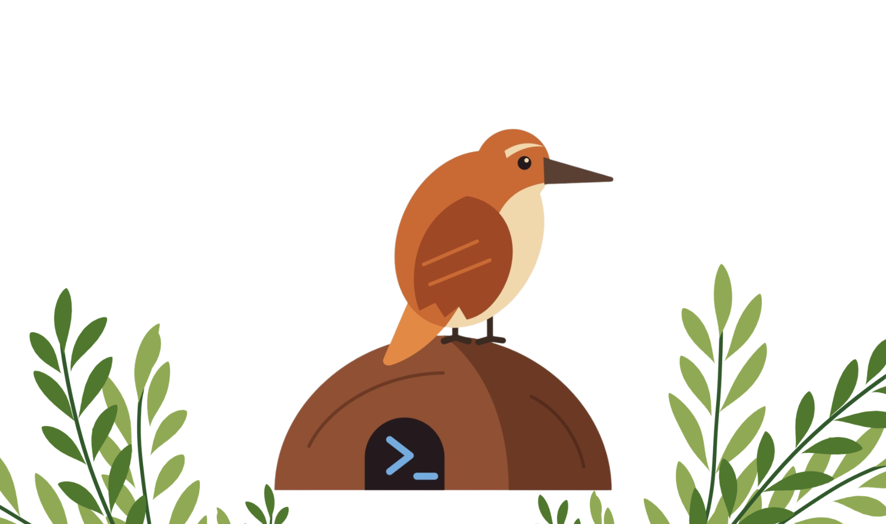

Qué dispositivos ya existen, cómo se leen sus datos y qué recursos oficiales ofrece el desafío. Cada dato fue comprobado en su fuente original.
Investigamos qué tecnología existe hoy para monitorear la salud de los astronautas, cómo podría conectarse nuestra app a dispositivos reales y qué recursos publicó la organización. Solo incluimos datos que pudimos comprobar.
Create Health Monitoring Software for Astronauts on Space Missions pide construir una herramienta visual que ayude a los astronautas a evaluar su propia salud durante misiones espaciales y les dé orientación sobre tratamientos y mejoras de salud.
El enunciado menciona como indicadores útiles: presión arterial, frecuencia cardíaca, glucosa en sangre, temperatura corporal, horas de sueño y estado de ánimo.
Fuente: Página oficial del desafío – Space Apps 2026
Los nombres son de NASA; las descripciones cortas son un resumen del equipo basado en la lista de riesgos de la sección 4.
Estos son los dispositivos que encontramos y pudimos comprobar en la fuente original.
| Dispositivo | Formato | ¿Usado en el espacio? |
|---|---|---|
| Bio-Monitor (CSA) | Remera + vincha + tablet | Sí · Estación Espacial, desde dic. 2018 |
| Actiwatch Spectrum | Reloj | Sí · Estación Espacial |
| T-Mini (ESA) | Vincha | Sí · Estación Espacial |
| Wearable Monitoring | Chaleco | Sí · Estación Espacial |
| Monitores ARCHeR | Muñeca | Sí · Artemis II |
| Remera Gateway (Hexoskin) | Remera | En desarrollo |
| EmbracePlus (Empatica) | Smartwatch | No confirmado |
| SpacePatch (DLR) | Parche | No confirmado |
Hay tres caminos verificados: conectarse directo por Bluetooth desde una página web, usar el kit de desarrollo de una marca en una app de celular, o pedir los datos a la nube del fabricante.
| Opción | Lenguaje | Qué ofrece |
|---|---|---|
| Web Bluetooth | JavaScript (navegador) | Pulso en vivo desde pulsómetros con el servicio estándar heart_rate. Funciona en ChromeOS, Chrome para Android 6.0+, Mac (Chrome 56+) y Windows 10 (Chrome 70+). Mozilla la marca como experimental; requiere HTTPS y permiso del usuario. |
| Polar BLE SDK | Kotlin (Android) Swift (iOS) | Transmisión en vivo de frecuencia cardíaca, ECG, acelerómetro, PPG y más. Compatible con Polar H10, H9, Verity Sense, OH1, Ignite 3, Vantage V3 / M3, Grit X2 / X2 Pro, Pacer / Pacer Pro y Polar 360 / Loop. |
| Polar AccessLink | API web (OAuth2, JSON o XML) | Ejercicios, actividad diaria, frecuencia cardíaca continua, sueño, Nightly Recharge, SleepWise y Elixir Biosensing (temperatura, ECG de muñeca, SpO2). Los datos llegan tras sincronizar, no en vivo. |
| Fitbit → Google Health API | API web | Google indica migrar de la Fitbit Web API a la Google Health API. En la página consultada no figura la fecha exacta de cierre. |
Fuentes: Chrome – Web Bluetooth · MDN – Web Bluetooth API · Polar BLE SDK · Polar AccessLink · Google Health API
navigator.bluetooth.requestDevice({ filters: [{ services: ['heart_rate'] }] }) .then(device => device.gatt.connect()) .then(server => server.getPrimaryService('heart_rate')) .then(service => service.getCharacteristic('heart_rate_measurement')) .then(characteristic => characteristic.startNotifications()) .then(characteristic => { characteristic.addEventListener('characteristicvaluechanged', handleCharacteristicValueChanged); });
Resumen de los recursos publicados en la pestaña Resources del desafío. NASA aclara que no respalda sitios que no sean del gobierno de EE. UU. y que hay que respetar las condiciones de uso de datos de cada sitio.
Fuente: Space Apps 2026 – Resources del desafío
| Categoría | Riesgos que lista NASA | Indicador posible en nuestra app * |
|---|---|---|
| Fisiología humana 11 riesgos | Respuestas alteradas del sistema inmune; función sensoriomotora y vestibular alterada; adaptaciones cardiovasculares; enfermedad por descompresión; interacción huésped-microorganismos; hipoxia; alimentación y nutrición inadecuadas; lesiones en caminatas espaciales; menor aptitud cardiorrespiratoria y musculoesquelética; síndrome neuro-ocular (SANS); cambios óseos. | Pulso y presión; temperatura; glucosa y alimentación; minutos de ejercicio; síntomas. |
| Comportamiento y factores humanos 5 riesgos | Cambios de comportamiento y trastornos psiquiátricos; trabajo en equipo inadecuado; sueño inadecuado y horarios irregulares; soporte inadecuado para operar sistemas; lesiones por cargas dinámicas. | Estado de ánimo; horas de sueño; carga de trabajo. |
| Radiación espacial 1 riesgo | Cánceres inducidos por radiación. | Registro de exposición acumulada (dato simulado). |
* Columna propuesta por el equipo, no por NASA.
Fuente: NASA HRP – Risks of Human Spaceflight
| Estudio | Qué hace (según NASA) |
|---|---|
| ARCHeR · Artemis II | Monitoreó bienestar, actividad y sueño con un dispositivo de actigrafía en la muñeca (movimiento, sueño y exposición a la luz). |
| Artemis II Standard Measures | La tripulación aportó un conjunto estándar de datos de salud a un banco de datos. |
| Standard Measures · órbita baja | Recolección de un conjunto consistente de mediciones fisiológicas y psicológicas. |
| Tempus Pro · pasado | Prueba de un dispositivo comercial de telemedicina para recolectar e integrar datos de salud. |
| Immune Biomarkers · Artemis II | Análisis de muestras de sangre y saliva de la tripulación. |
| Zero T2 · órbita baja | Cómo afecta a la salud y el rendimiento el ejercicio en el espacio sin cinta de correr. |
| B-Complex · órbita baja | Si un suplemento diario de vitamina B puede prevenir o reducir cambios en el cerebro y los ojos. |
| Space Gardening · pasado | Si cultivar verduras frescas puede aliviar la sensación de aislamiento y confinamiento. |
Fuente: NASA HRP – Ongoing HRP Research in Space
Esta sección es una recomendación del equipo, no un dato de las fuentes.
Aplicación web en JavaScript con figura humana clickeable, semáforo de colores y gráficos de evolución.
Pulso por Web Bluetooth si alguien del equipo tiene un pulsómetro o reloj compatible con el servicio estándar de frecuencia cardíaca.
Presión, glucosa, temperatura, sueño y ánimo cargados a mano o simulados para la demo.
Vincular cada parte del cuerpo con su riesgo oficial de NASA y mostrar que la idea es compatible con dispositivos ya usados en la Estación Espacial.
Todas las fuentes fueron abiertas y leídas el 14 de noviembre de 2026. Los enlaces del PDF se pueden clickear.